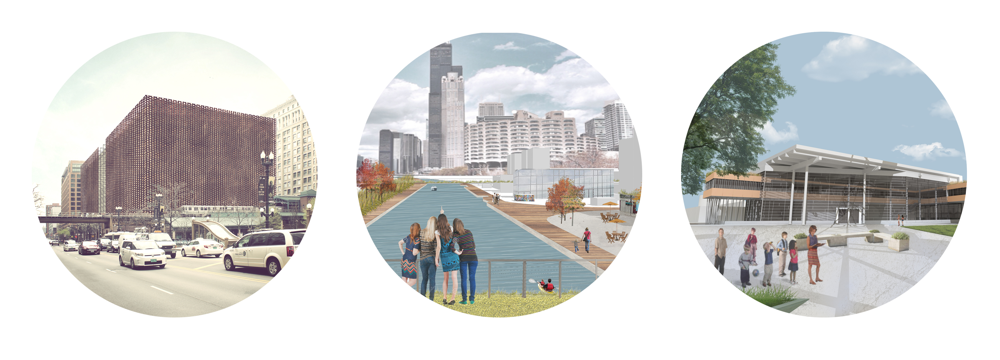

About Me
As a soon-to-be graduate with a professional degree in Architecture, I am highly self-motivated, passionate, and equipped with diverse experience in various architecture related disciplines. Throuh varied internships I have proven to be a valuable asset to several companies and groups. I strengthen teams by sharing innovative ideas and contributing work to achieve a common goal with excellence. I am looking to pursue opportunities which will allow me to share fresh ideas and collaborate with others while enhancing my experience and skills.

Experience
The Interior Design Group Ltd.
January 2009 - June 2015
- Oversaw the company website redesign and reconstruction.
- Developed drawings to communicate design intent and construction method.
- Rendered views to study and present design proposals.
- Consulted with clients about needs and services.
Kent Consulting Engineers
June 2015 - Present
- Surveyed sites to verify existing conditions.
- Calculated and designed plumbing, fire protection, mechanical, and electrical systems.
- Worked with code requirements to fulfill necessary protocol.
- Worked among diverse teams to complete projects for clients.
Education
Illinois Institute of Technology
Professional Degree in Architecture
Fall 2013 - Spring 2016
College of Dupage
Associate Degree in Architecture
Fall 2011 - Spring 2013
Wheaton warrenville South
High School Diploma
Fall 2008 - Spring 2011
Skills
- AutoCAD
- 3DS Max
- Adobe Photoshop
- Adobe InDesign
- Adobe Illustrator
- Google Sketchup
- Microsoft Office
Languages
- English | 1st | Fluent
- Spanish | 2nd | FLuent
Achievements
- IIT Dean's Honor Society
- Alpha Beta Gamma (Honors)
- Phi Theta Kappa (Honors)
Interests
- Architecture
- Photography
- Renovating Cars
- Off Roading
- Mexican Culture
- Latin Dance
Projects

Harold Washington Library
Chicago, IL
insert project description here
Urban Paradox
Sao Paulo, Brazil
insert project description here
Education Center
Port Huron
insert project description here
Contact
Jessica Lies
Chicago, Illinois
- jessica_lies@yahoo.com
- www.linkedin.com/jessicalies